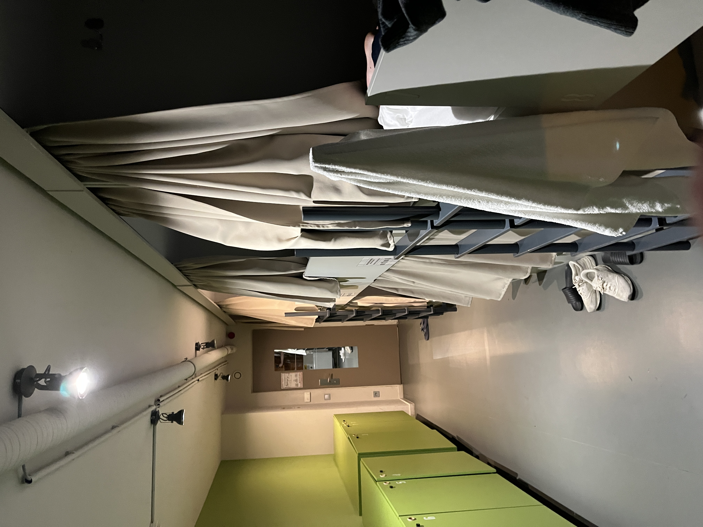
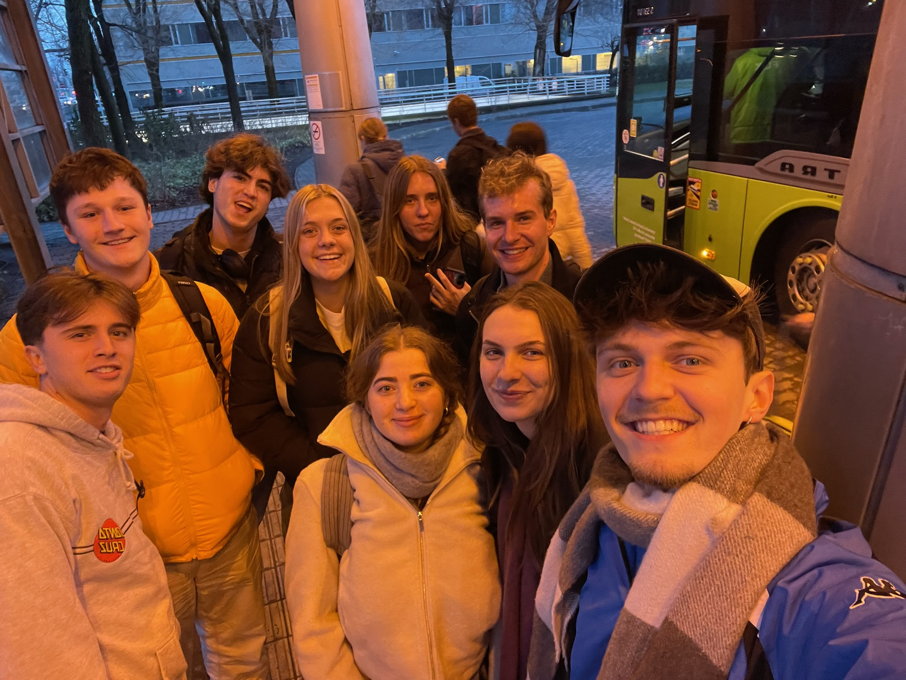

March 11, 2025
Budapest
Budapest was amazing and a perfect destination for our first trip out of Czechia. The city felt very similar to Prague in a lot of respects. From a tourist perspective, Budapest has more things to do and visit than Prague since it’s a fair bit larger, but it lacks the quaintness that makes Prague so special. The public transportation was fantastic, possibly even better than Prague’s, which is a high bar to pass, and the metro stations were super unique looking. That being said, there were a lot more cars which noticeably detracted from my enjoyment. The architectural style of most of the buildings felt very similar, with lots of ornate buildings and red roofs. I find it very interesting that neither Prague nor Budapest has anything in the way of skyscrapers. Budapest technically has one but it would barely count by US standards. We stayed at the Maverick Central Market Hostel, which I can highly recommend. It was cheap, clean, a great location, and let us store our luggage for free before check-in.


Friday
After taking the overnight Flixbus from Prague, we arrived half asleep to Budapest at 6 am. Thankfully the thermal baths awaited us. Three hours soaking in warm pools and saunas was so delightful, I need to find something similar in Prague. I can highly recommend Lukacs Baths if you’re ever in Budapest, only $10 for the whole day! We spent the rest of the day sightseeing! First on the agenda was St. Stephen’s Basilica, I didn’t have time to go inside, but the outside was very impressive. Next up was the Hungarian Parliament Building, which I would put in the running for most beautiful parliament building in the world, especially when it’s lit up at night. From there we went to the Dohány Street Synagogue, the largest synagogue in Europe. Tickets to go inside were $30, unfortunately, but we walked around the outside and read up on the building’s history. Last on the landmarks list for the day was the Museum of Hungarian Agriculture, which looked like a castle, with a moat and everything. For dinner we went to a restaurant called Babka, I ordered the Jemen Goulash. It was delicious and the presentation was amazing.



Saturday
Another packed day of Budapest sightseeing. We started with Budapest Castle. Learning about the history of the Siege of Budapest by the Soviets and Romanians at the end of World War II was sobering. I’m amazed at how well the city has recovered after having its population and buildings so decimated. We didn’t end up going into the Castle to the history museum, but the view of Budapest from the top was beautiful. We managed to be timed perfectly for the hourly changing of the guards, I like that ceremonial stuff like that still has a place. Next we visited the Church of Saint Matthias which is one of the most incredible buildings I’ve ever seen. The hexagon tiling on the roof and the golden interior was all so amazing. For sunset we went to Gellért Hill, which has beautiful bluffs that overlook the city center. We ended the night with a prosecco cruise. Unlimited prosecco and truffle pasta is a dangerous combination but we had a great time.